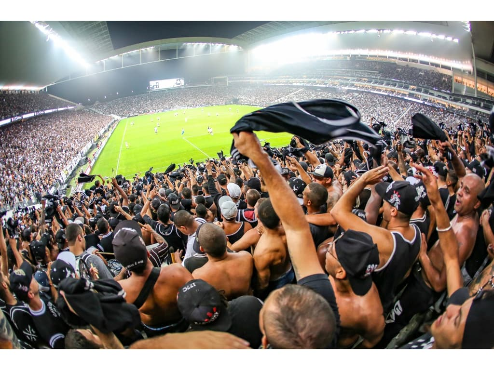
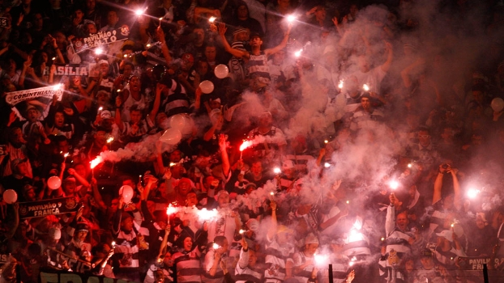

História do Sport Club Corinthians Paulista
A história do Sport Club Corinthians Paulista cobre mais de um século do futebol brasileiro, sediado na cidade de São Paulo e fundado em 1 de setembro de 1910 é reconhecido como um dos mais bem-sucedidos entre as equipes do futebol do Brasil

Com mais de 30 milhões de torcedores, o Corinthians é o clube de futebol dono de uma das maiores torcidas do mundo e a maior do Brasil. O corinthiano não mede esforços para acompanhar os jogos do Timão e é capaz até de atravessar o mundo para ver o seu time em campo.
